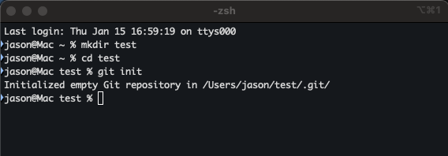
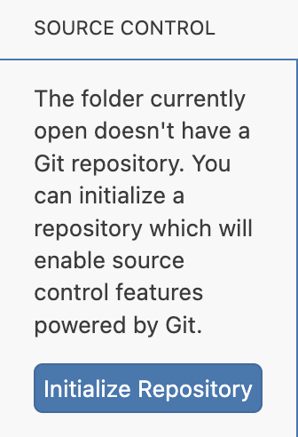

Introduction to Git, Github, and Github Classroom
What is version control?
Version control is a system for keeping a record of changes to files over time. Rather than maintaining only a single “current” version of your work, a version control system stores a history of versions, allowing you to see how a file or project has evolved and to return to earlier states when necessary.
One important reason to use version control is that it protects your work. It allows you to undo mistakes, recover earlier versions, and work incrementally without worrying about losing progress.
However, version control is also essential for collaboration.
The limits of earlier approaches to collaboration
Before modern version control systems were widely adopted, collaboration was often handled in informal and unreliable ways. Common approaches included:
- emailing files back and forth,
- storing files on a shared drive,
- or saving multiple copies of the same file with different names (for example,
report_final_v2_reallyfinal.docx).
These approaches do not scale well. They make it difficult to answer basic questions such as:
- Who made this change?
- When was it made?
- Which version is the most recent?
- How do we combine changes made by different people?
Even tools such as Google Docs, which improve collaboration for single documents, have important limitations. They are designed primarily for real-time editing of text, not for structured projects that involve many related files, such as data, code, figures, and written reports. They also provide limited support for careful review of changes, offline work, and long-term project organization.
As projects grow larger or involve more contributors, these limitations quickly become serious problems.
How Git addresses these problems
Git was designed specifically to support both change tracking and collaboration.
With git:
Each contributor works on their own local copy of a project.
Changes are saved as clearly labeled checkpoints called commits.
Git records who made each change, when it was made, and what was modified.
Changes from multiple contributors can be combined in a controlled and transparent way.
Because every contributor has access to the full project history, git allows people to work independently without overwriting one another’s work. This makes collaboration safer, clearer, and more reliable.
For these reasons, git has become the standard version control system in data science, computing, and many other technical fields where collaboration, reproducibility, and careful change tracking are essential.
In this course, version control is used not only to protect your work, but also to introduce you to collaborative workflows that are standard in professional environments.
Git and GitHub: how they work together
In this course, you will use git and GitHub together. Although their names are similar, they serve different roles, and understanding how they fit together is important.
Git is a program that runs on your computer. Its job is to track changes to files over time. When you make a commit, git records what changed and when it changed, and it allows you to return to earlier versions if needed. Git works entirely on your local machine and does not require an internet connection to track changes.
GitHub is a website that works with git. It stores a copy of your git repository online and allows that repository to be shared with others. In this course, GitHub is used to distribute assignments, collect submissions, and allow instructors and teaching assistants to view and provide feedback on your work through GitHub Classroom. More broadly, GitHub is widely used for collaboration and as a professional portfolio.
A helpful way to think about the relationship is the following:
- Git is the tool that tracks and saves your work on your computer.
- GitHub is the online service that stores a copy of that work and makes it possible to share it.
You can use git without GitHub, but you cannot use GitHub effectively without git. In practice, they are almost always used together.
GitHub and employment
Beyond its role as a collaboration tool, GitHub has become an important part of how employers evaluate candidates in data science, computing, statistics, and related quantitative fields. A GitHub profile allows employers to see concrete examples of how you work, rather than relying only on a résumé or transcript. In particular, it shows how you organize projects, document your work, and make progress over time.
Employers are usually not looking for advanced or highly optimized code. Instead, they look for evidence of good professional practices, such as:
- clear organization of files and folders,
- readable and reasonably well-structured code,
- short but informative
READMEfiles explaining what a project does, - meaningful commit messages that describe changes,
- and evidence that a project was developed step by step, rather than all at once.
Even relatively small course assignments can demonstrate these skills when they are completed carefully and presented clearly. For this reason, a GitHub repository can function as a professional portfolio, complementing a resume and LinkdIn profile by showing not just what you know, but how you work.
During this course, most of your GitHub repositories will be private and used for assignments. Near the end of the course, we will return to this topic and discuss how selected course projects can be cleaned up, documented, and adapted for use as part of a public professional portfolio.
GitHub Classroom
GitHub Classroom is a tool built on top of GitHub that is designed specifically for teaching and learning. It allows instructors to distribute assignments, collect student work, and provide feedback using the same tools and workflows that are used in professional technical environments.
When you accept an assignment link, GitHub Classroom automatically creates a private GitHub repository for you that contains the starter files and instructions. This repository belongs to you, and only you and the course staff can see it. There is no separate submission system to learn: your work is submitted by committing changes and pushing them to GitHub.
It is helpful to be clear about what GitHub Classroom does and does not do. Github Classroom is
a way to distribute assignments via git,
a system for collecting individual and group work via git,
and a platform for viewing progress and providing feedback.
GitHub Classroom is not:
a place where you upload finished files at the last minute,
a replacement for git itself, -
or a tool that automatically grades your work just because you pushed it.
GitHub Classroom works by giving you a structured GitHub repository and expects you to use git in a disciplined way throughout the assignment.
Submission, deadlines, and grading
For GitHub Classroom assignments, there is no separate “Submit” button.
Your work is considered submitted based on:
what has been committed, and
what has been pushed to GitHub by the assignment deadline.
Instructors and teaching assistants will view your repository directly when grading. This allows them to see not only the final result, but also how your work developed over time. Commit history, file organization, and documentation are therefore part of the record of your work.
Individual and group projects
We will use GitHub Classroom for both individual assignments and group projects in this course.
For individual assignments, GitHub Classroom ensures that each student has a private repository with a clear structure and submission process.
For group projects, GitHub Classroom provides even greater benefits. Group repositories allow all team members to:
work on the same project without overwriting each other’s work,
clearly see who contributed what and when,
review changes made by teammates,
and coordinate work in a structured, professional way.
This mirrors how collaborative technical work is done in practice. Rather than emailing files or merging incompatible versions, each group member contributes through commits that Git can combine safely. This makes collaboration clearer, more reliable, and easier to manage.
Using GitHub Classroom for group projects also helps ensure fairness and transparency, since contributions are recorded automatically. It encourages good collaboration habits that are directly transferable to professional environments.
Overall, GitHub Classroom provides a consistent, organized framework for managing coursework, collaboration, and feedback, while also helping you develop skills that are widely used beyond the classroom.
Summary: Why we use Git and GitHub in this course
In this course, Git and GitHub serve several closely related purposes.
First, version control protects your work. Git keeps a detailed history of changes, allowing you to undo mistakes, recover earlier versions, and experiment safely. This makes it easier to work confidently, even when you are unsure or trying something new.
Second, Git enables effective collaboration. Rather than emailing files, managing multiple versions, or risking accidental overwrites, Git allows multiple people to work on the same project in a controlled and transparent way. Each change is recorded, attributed, and can be combined with others’ work reliably. These collaboration workflows are standard in data science and computing.
Third, GitHub provides the shared online space where this work lives. In this course, GitHub is used to distribute assignments, collect submissions, and provide feedback through GitHub Classroom. More broadly, GitHub is widely used in professional environments and plays an important role in hiring. A well-organized GitHub repository demonstrates that you can follow technical instructions, structure projects clearly, and complete work in a disciplined way over time.
For these reasons, Git and GitHub are not just submission tools in this course. They are central to how we manage work, collaborate, and practice the workflows used in modern data science.
Git Basics
Below we walk you through some basics of working with git. Here is a nice introductory video about git.
You may already have git installed on your computer. You can check by opening a terminal window and typing git --version. If git is intalled, it will tell you the version number. For example,

If you do not have git installed, it will tell you something like “command not found.” In that case, you need to install it.
Instructions for installing git can be found here.
Basic Git Concepts
Repositories (repos)
A repository (often called a repo) is a folder that Git is tracking. In addition to your files, a repository contains the information Git uses to record changes over time, including the full history of commits. Once a folder is a Git repository, Git can track changes to the files inside it and help manage collaboration.
You can create a repository either by initializing Git in an existing folder or by cloning an existing repository from GitHub.
Initializing A Git Repo In An Existing Folder
If you already have a folder on your computer and want Git to start tracking it, you can turn it into a git repository using the command line or in an IDE like Positron.
We first demonstrate this using the command line. To do this, open a terminal, navigate to the folder (or create a new one), then run:
git initIn the sequence of commands below we first create a directory called test (mkdir test), change to that directory (cd test), and then initialize that directory as a git repo (git init).

To do this within Positron,
Open your project folder in Positron via the File menu or by right-clicking the folder in your operating system’s file explorer and selecting “Open in Positron”.
Open the Source Control view by clicking the Source Control icon
 in the Activity Bar on the side of the window.
in the Activity Bar on the side of the window.Click the “Initialize Repository” button or link within the Source Control panel.

Cloning an existing repository from GitHub
You can also create a git repository on your computer by cloning an existing repository from a remote site. Usually this means cloning a repo from Github.
You will do this for almost every assignment in this class, but outside of class this usually begins by finding code on github that interests you.
For example, the mathematician Terrence Tao has formalized his real analysis textbook in the programming language lean, and posted that project on github at
https://github.com/teorth/analysis
Thus, I can clone this repository on my local machine by opening a terminal and typing
git clone https://github.com/teorth/analysis.gitRunning that command gives

When you run this command, Git prints output indicating what it is doing. You see a first line similar to:
> Cloning into 'analysis'..This message indicates that Git has created a new directory named `analysis` and downloaded the contents of the repository into that directory. By default, Git uses the name of the repository for the folder.
Using the command line to get work from your computer to GitHub
After you clone a repository and make changes to files on your computer, you must send those changes back to GitHub. This process always follows the same three steps:
- add
- commit
- push
These steps must be done in this order.
Step 1: git add — select changes to save
After editing files, Git notices the changes but does not automatically include them in the next commit. The command git add tells Git which changes you want to save.
To stage all changed files at once on the command line, from within your working directory run:
git add .Step 2: git commit — save a checkpoint
A commit saves a snapshot of the staged changes and records them in the repository history. After staging files as described above, run:
git commit -m "Describe what you changed"After this step, your changes are saved in Git, but only on your computer.
Step 3: git push — upload your work to GitHub
To send your commits to GitHub, run:
git pushAfter pushing, refreshing the repository page on GitHub will show your changes online.
For GitHub Classroom assignments, pushing your work is how you submit it.
Getting work from your computer to GitHub from Positron
You can perform the same workflow using Positron’s graphical interface, without typing Git commands directly.
Step 1: Open the Source Control panel
After editing files, open the Source Control panel in Positron. You will see a list of modified files.
Step 2: Stage changes
Select the files you want to include in the next commit, or stage all changes using the provided controls.
Step 3: Commit changes
Enter a short, descriptive commit message explaining what you changed, then click Commit.
This saves a checkpoint of your work locally, just like git commit.
Step 4: Push to GitHub
Click Push or Sync to upload your commits to GitHub.
As with the command line, your work is not submitted until it is pushed to GitHub.
A simple rule to remember
Whether you use the command line or Positron, the logic is the same:
- Edit files
- Add / stage changes
- Commit
- Push
If you follow this sequence consistently, most Git problems can be avoided.
Expectations for commits and repositories
To make Git and GitHub effective learning tools, we will follow a few basic expectations throughout the course. These are not meant to be burdensome; they reflect standard professional practice.
Commit expectations
A commit should represent a meaningful unit of work. You do not need to commit constantly, but you should commit often enough that your progress is clearly documented.
In general:
Commit when you complete a logical step (for example, cleaning data, adding a plot, or drafting a section of a report). ]
Write short but descriptive commit messages that explain what changed (not how long you worked).
Examples of good commit messages:
Clean and filter raw datasetAdd summary statistics tableDraft introduction section
Examples of poor commit messages:
stuffchangesworked on homework
Commit history is not graded for perfection. It is used to understand how your work developed and to support collaboration and feedback.
Repository organization
Each assignment repository should be kept reasonably organized. This typically means:
following the folder structure provided in the starter files,
keeping related files together,
and avoiding unnecessary or unused files.
Clear organization makes your work easier to understand, both for grading and for your future reference.
Assignment workflow in this course
Most assignments in this course will follow the same general workflow using GitHub Classroom and standard data science tools.
1. Assignments are created in GitHub Classroom
Assignments are created by the instructors in GitHub Classroom. Each assignment typically includes:
a description of the task, *
starter files or starter code,
and written instructions (usually in a
README.mdfile).
Assignments may be individual or group-based.
2. You accept the assignment
When you click the assignment link:
GitHub Classroom creates a private GitHub repository for you (or for your group),
the starter files are copied into that repository,
and the repository becomes the central place where your work lives.
Only you (and your group members, if applicable) and the course staff can see this repository.
3. You clone the repository and begin working
You clone the repository to your computer and do your work locally. Depending on the assignment, this may involve tools such as:
Python for data analysis,
Quarto for reports and reproducible documents,
Positron as your development environment,
and possibly R or other tools used in data science workflows.
As you work, you make commits to save progress and document changes.
4. You collaborate when appropriate
For group assignments, all group members work within the same repository. Git allows each person to contribute without overwriting others’ work, and it records who made each change and when. This supports clear coordination and mirrors professional collaborative practice.
5. You push your work to GitHub
To submit your work, you push your commits to GitHub. There is no separate submission step outside of GitHub.
The version of the repository that exists on GitHub at the assignment deadline is what will be graded.
6. Feedback and grading
Instructors and teaching assistants view your repository directly when grading. Feedback may be provided through comments, issues, pull requests, or the course LMS. Your commit history, file organization, and documentation form part of the record of your work.
By following this workflow consistently, you will not only complete assignments efficiently, but also gain experience with tools and practices that are standard in professional data science and computing environments.
Workflow for group projects
Some assignments in this course will be completed in groups. GitHub Classroom and Git are especially valuable in this setting, because they support structured collaboration.
Dividing and coordinating work
Group members should coordinate responsibilities early. Common strategies include: - assigning different files or sections to different people, - dividing tasks such as data cleaning, analysis, visualization, and writing, - and agreeing on when and how often to push changes.
Git allows each person to work independently while still contributing to the same project.
Making changes safely
When working in a group: - Pull from GitHub before starting a work session to get the latest changes. - Commit your work in small, clear steps. - Push regularly so others can see your progress.
If Git reports a conflict, it simply means that two changes need to be reconciled. Conflicts are a normal part of collaborative work and can be resolved with care and communication.
Accountability and transparency
Git automatically records: - who made each change, - when it was made, - and what files were modified.
This supports transparency and fairness in group work. It also mirrors how collaborative technical projects are managed in professional environments.
Following these expectations will help ensure that both individual and group projects run smoothly, while giving you practical experience with collaborative workflows used in data science and related fields.
Running example: Git and GitHub Fundamentals (your first assignment)
Your first GitHub Classroom assignment is called Git and GitHub Fundamentals.
This assignment is provided by GitHub and is designed specifically for beginners.
You are not expected to understand Git before starting this assignment.
Instead, the assignment walks you through the basic workflow step by step.
GitHub Classroom: how assignments work
Step 1: Accept the assignment
You will receive a link to the assignment.
When you click the link, GitHub Classroom creates a private repository for you.

Accepting the assignment creates your personal repository.
Step 2: Your private repository
After accepting the assignment, you will see a repository on GitHub that:
- is labeled Private, and
- belongs to you.
Only you and the course staff can see this repository.

Step 3: Clone the repository to your computer
To work on the assignment, you must copy the repository to your computer.
This process is called cloning.
git clone <REPO_URL>
cd <REPO_FOLDER>
Step 4: Read the instructions
Each assignment includes a file named README.md.
This file explains what you are expected to do and which files you should edit.

Always read the README before making changes.
Step 5: Edit the required files
You will edit files using Positron or another editor, just as you would edit a document.

At this stage, your changes exist only on your computer.
Step 6: Commit your work
A commit saves your changes as a checkpoint in Git.
git add .
git commit -m "Complete GitHub Fundamentals assignment"
Committing does not submit your work; it only saves it locally.
Step 7: Push your work to GitHub (submission)
To submit your work, you must push your commits to GitHub.
git push
For GitHub Classroom assignments, pushing your work is how you submit it. If you do not push, the instructors cannot see your work.
Frequently asked questions
“I edited a file, but GitHub does not show my changes.”
This usually means that you have not completed all steps of the workflow. You must both commit your changes and push them to GitHub.
“I committed my work. Why does my instructor say nothing was submitted?”
A commit only saves your work on your computer. Your work is visible to instructors only after you push it to GitHub.
“I see an error message. Did I break something?”
Most error messages are normal and do not mean you broke anything. Read the message carefully. If you are unsure, copy the message and ask for help.
“What if I make a mistake and push the wrong thing?”
Mistakes can be fixed. You can make additional commits and push again. Git keeps a full history, so errors are rarely permanent.
“Can instructors see my earlier mistakes?”
Yes, instructors can see your commit history. This is expected and completely normal in a learning environment.
“What should I do right before the deadline?”
Before the deadline:
- Commit your latest changes.
- Push to GitHub.
- Refresh the repository page in your browser.
- Confirm that your changes appear online.
References and helpful resources
If you would like additional explanations or examples, the following resources are reliable and beginner friendly:
GitHub Getting Started Documentation
https://docs.github.com/en/get-startedGitHub Classroom Documentation
https://docs.github.com/en/classroomGit Handbook
https://guides.github.com/introduction/git-handbook/Pro Git (free online book)
https://git-scm.com/book/en/v2
You are not expected to read all of these materials. They are provided for reference.
Final note
Learning Git takes practice. Confusion at the beginning is normal. With repeated use, the workflow will become familiar.